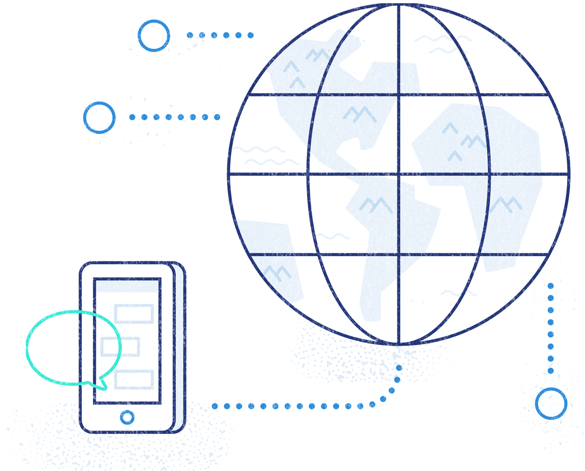

Wanneer gebruikt u shortcodes
WordPress heeft meerdere beveiligingscontroles en filters ingebouwd, om te voorkomen dat kwaadaardige code binnenkomt. Bijvoorbeeld in:
Wanneer gebruikt u shortcodes
Shortcodes zijn niet nodig als u slechts één functie op een specifiek bericht of pagina maakt. Maar als u die shortcode gebruikt in verschillende berichten of pagina's, kunt u een plugin gebruiken om een shortcode toe te voegen. Dit maakt het gemakkelijker om een WordPress-onderdeel aan te passen.
Shortcode Ultimate Plugin
QR code generator Gallerij,Sliders,Responsieve video´s,Knoppen met iconen,Macro tabellen,Labels en tekstblokken,Audio en Google Map.